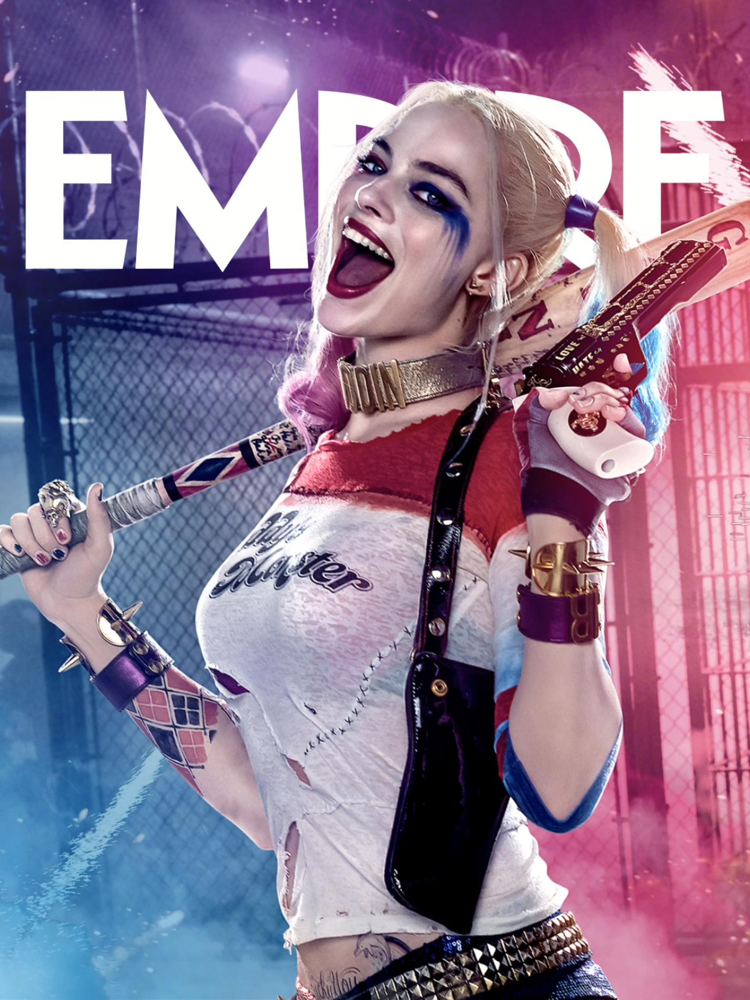
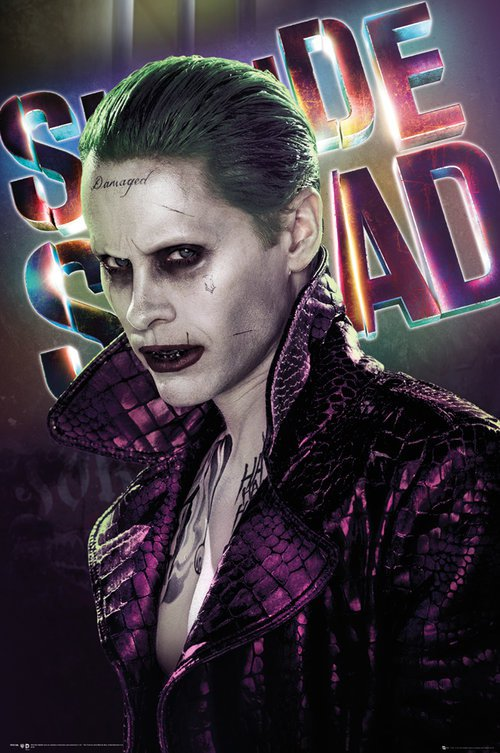
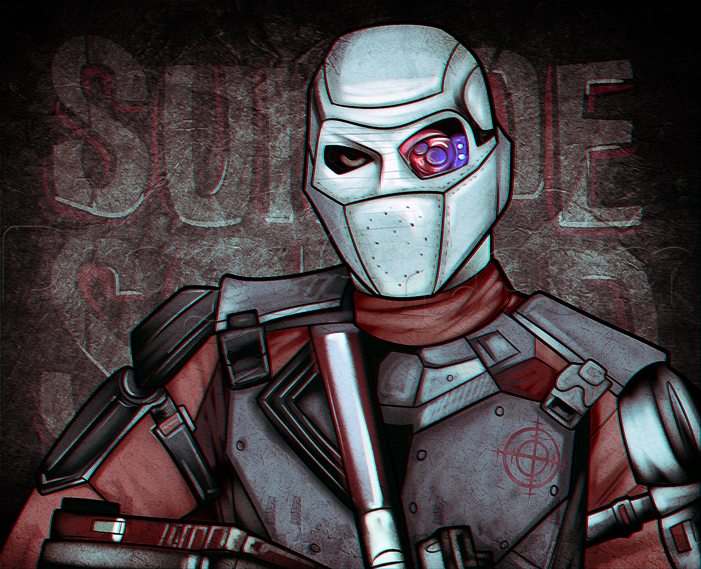
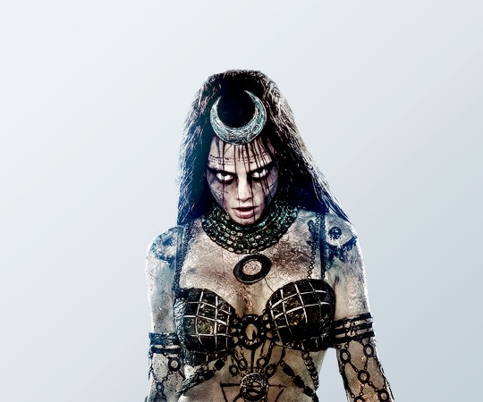
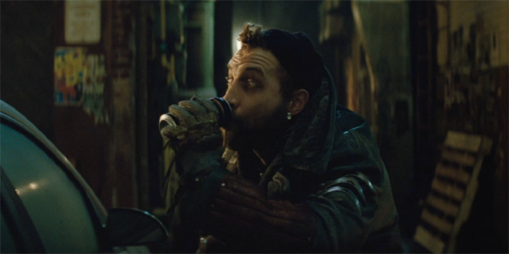
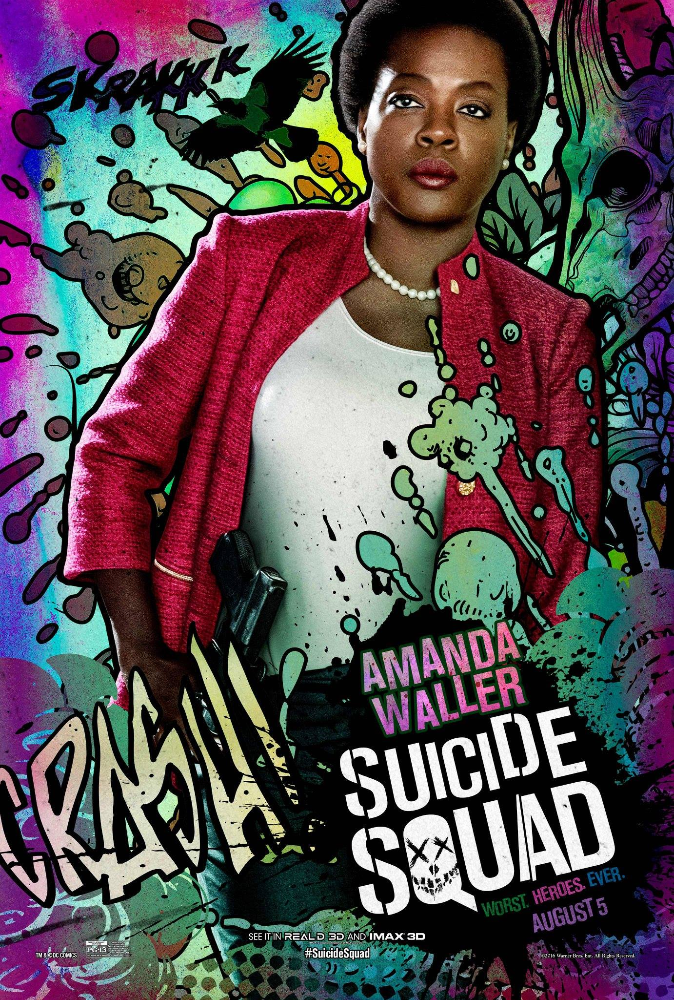
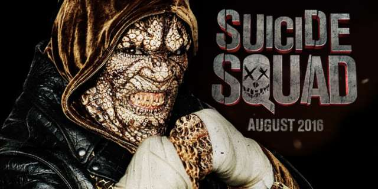

|  |
Harley Quinn |
Harley Quinn is a fictional supervillain appearing in American comic books published by DC Comics. The character was created by Paul Dini and Bruce Timm, and first appeared in Batman: The Animated Series in September 1992. |
|  |
Joker |
The Joker is a fictional character that was created by Bill Finger, Bob Kane, and Jerry Robinson that first appeared in the debut issue of the American comic book Batman published by DC Comics |
|  |
DeadShot |
Deadshot is a fictional character who appears in American comic books published by DC Comics, commonly as an adversary of Batman. He has traditionally been portrayed as a supervillain, but has more recently taken the role of an antihero. |
|  |
enchantress |
Enchantress, also known as June Moone, is a fictional supervillain appearing in American comic books published by DC Comics. The character was created by writer Bob Haney and artist Howard Purcell, and first appeared in Strange Adventures #187 (April 1966). |
|  |
Captain Boomerang |
George "Digger" Harkness, best known under his alias Captain Boomerang or just Boomerang, is a supervillain who appears in American comic books published by DC Comics. |
|
Katana |
is a fictional superheroine that appears in comic books published by DC Comics. The character made her feature film debut in the 2016 Suicide Squad film, portrayed by actress Karen Fukuhara. |
|  |
Amanda Waller |
Director Amanda Blake Waller is a fictional character appearing in American comic books published by DC Comics. The character first appeared in Legends #1 in 1986, and was created by John Ostrander, Len Wein and John Byrne. |
|  |
Killer Croc |
Killer Croc is a fictional supervillain appearing in American comic books published by DC Comics, commonly as an adversary of the superhero Batman. The character was created by writer Gerry Conway and by artist Gene Colan. |
 |
Batman |
Batman is a fictional superhero appearing in American comic books published by DC Comics. The character was created by artist Bob Kane and writer Bill Finger, and first appeared in Detective Comics #27. |